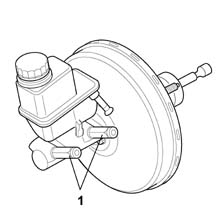
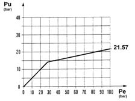

INTRODUCTION - BRAKES
- Path
- Descriptions > 33 BRAKING SYSTEM > INTRODUCTION - BRAKES
- Kind
- system description
- Applies to
- all engines; all production periods
- Interactive page
- https://sloeber94.github.io/elrnDB-fPnd/en/#/169000011
Applies to: all engines; all production periods
The double crossover braking system allows both sides of the vehicle to brake even if one circuit fails. Each circuit acts on one front wheel and the diagonally opposed rear wheel.
All versions are fitted with a 9" brake servo.
The vacuum pipe-brake servo connection on petrol vesions is located in a siphon area of the intake manifold to prevent petrol vapours passing through.
Versions without ABS are fitted with two constant pressure regulators (In Line Valves) on the brake pump body. Both pressure regulators must be present if the brake system is crossover. The pressure regulators prevent the rear wheels from locking when the vehicle load shifts to the front axle during braking.
The remaining versions, without ABS are fitted with a variable load proportioning valve fastened to the body at the rear.
The front brakes are disc type. Ventilated brake discs on the 1.3 16v JTD version. The callipers are floating on petrol versions and twin cylinder with automatic play take-up on jtd versions.
Rear drum brakes on all versions.
Applies to: engines: 1.2 8v; all production periods; only with equipment: 4x4
General remarks on 4x4 version
In line with goals of excellence, the four wheel drive version is equipped with braking systems with:
- high efficiency;
- excellent modulation properties;
- safe in all conditions.
The vehicle is also fitted with the most sophisticated auxiliary electronic and mechanical systems:
- ABS: anti-lock brakes;
- EBD: (contained in the ABS) electronic brakeforce distribution between the front and rear wheels;
- MSR: (contained in the ABS) to modulate engine braking torque during downwrd gear shifts
- ventilated brake discs on the front wheels
- twin cylinder front callipers with automatic play take-up
- solid brake discs on the rear wheels
Brake servo
Abs
- it ensures that each wheel at the point of locking brakes as effectively as possible given the available grip
- it safeguards full control of the vehicle under extreme conditions when the wheels are close to locking
- quickest possible reponse
- the capacity to automatically adapt to the most diverse operating conditions
- reduced control unit weight.
- improved brakeforce distribution
- modulation can be adopted to the true wheel grip conditions and pad efficiency
- a reduction in the temperature of the front brakes and the force required at the brake servo
- continuous monitoring of the efficiency of the system
- maintainance of the adjustment over a period of time
Applies to: all engines; all production periods
OPERATION
In rest position, the pressure regulator control spring presses the piston fully down in the cylinder, i.e. against the wall of the outlet chamber. Up to an operating pressure of 21.51 bars, Output pressure (OP) corresponds to input pressure (Pi). An increase in input pressure acts on the piston to bring about displacement by overcoming the pressure of the control spring. Under these conditions, the volume increases in the outlet chamber and the pressure in the rear circuit consequently falls by a ratio of 0.15 for each wheel.

1, Pressure regulators
Pressure regulator typical curve
.

Po, Output pressure
Pi, Input pressure
21.57, Pressure regulator cut-off pressure